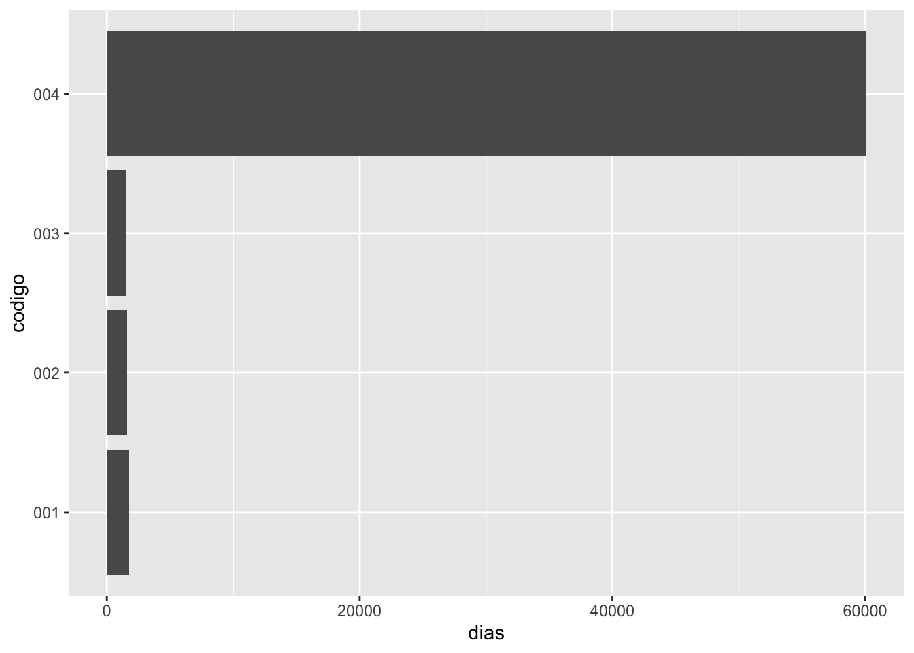

Chapter 17 Fechas, horas y minutas
Fecha de la ultima revisión
## [1] "2023-08-21"El tema proviene de los siguientes sitios.
English: https://r4ds.had.co.nz/dates-and-times.html
Español: https://es.r4ds.hadley.nz/16-datetimes.html
17.2 Creando fechas/horas
- date,
- time,
- date-time,
https://github.com/edgararuiz/guias-rapidas/blob/master/fechas.pdf
17.3 El paquete lubridate
La función today() regresa la fecha de hoy, similar a Sys.date()
## [1] "2023-08-21"Usames tibble(), del paquete tibble, para crear una tabla manualmente
Code
## # A tibble: 4 × 2
## codigo fecha
## <chr> <chr>
## 1 001 01/01/2019 00:00:00
## 2 002 31/03/2019 01:05:00
## 3 003 14/06/2019 20:00:00
## 4 004 01/03/1859 11:32:13Hay varias opciones para convertir texto a fechas, el más usado es mdy_hms(), pero en este caso el formato utilizado no funciona bien.
17.3.1 Un error tipico
## Warning: There was 1 warning in `mutate()`.
## ℹ In argument: `fecha = mdy_hms(fecha)`.
## Caused by warning:
## ! 2 failed to parse.## # A tibble: 4 × 2
## codigo fecha
## <chr> <dttm>
## 1 001 2019-01-01 00:00:00
## 2 002 NA
## 3 003 NA
## 4 004 1859-01-03 11:32:13Ya que el día es el primero, y no el mes, usamos dmy_hms()
## # A tibble: 4 × 2
## codigo fecha
## <chr> <dttm>
## 1 001 2019-01-01 00:00:00
## 2 002 2019-03-31 01:05:00
## 3 003 2019-06-14 20:00:00
## 4 004 1859-03-01 11:32:13lubridate tiene varias funciones para extraer partes de la fecha, por ejemplo: año, mes, día, hora, minuto, y quatrimestre.
Code
## # A tibble: 4 × 8
## codigo fecha a m d h mn q
## <chr> <dttm> <int> <int> <int> <int> <int> <int>
## 1 001 2019-01-01 00:00:00 2019 1 1 0 0 1
## 2 002 2019-03-31 01:05:00 2019 3 31 1 5 1
## 3 003 2019-06-14 20:00:00 2019 6 14 20 0 2
## 4 004 1859-03-01 11:32:13 1859 3 1 11 32 1Las funciones round_date(), ceiling_date() y floor_date() permiten redondear la fecha al número más cercano de la unidad especificada
Code
## # A tibble: 4 × 5
## codigo fecha redondear techo
## <chr> <dttm> <dttm> <dttm>
## 1 001 2019-01-01 00:00:00 2019-01-01 00:00:00 2019-01-01 00:00:00
## 2 002 2019-03-31 01:05:00 2019-04-01 00:00:00 2019-04-01 00:00:00
## 3 003 2019-06-14 20:00:00 2019-06-01 00:00:00 2019-06-15 00:00:00
## 4 004 1859-03-01 11:32:13 1859-03-01 00:00:00 1859-03-02 00:00:00
## # ℹ 1 more variable: suelo <dttm>17.4 Intervalos y duraciones
La función interval() crea un objeto R de intervalo de tiempo. En este caso, el intervalo entro la fecha en la tabla, y el día de hoy. Nota que esto puede ser muy util si quiere calcular la cantidad de tiempo entre dos fechas.
## # A tibble: 4 × 3
## codigo fecha intervalo
## <chr> <dttm> <Interval>
## 1 001 2019-01-01 00:00:00 2019-01-01 00:00:00 UTC--2023-08-21 UTC
## 2 002 2019-03-31 01:05:00 2019-03-31 01:05:00 UTC--2023-08-21 UTC
## 3 003 2019-06-14 20:00:00 2019-06-14 20:00:00 UTC--2023-08-21 UTC
## 4 004 1859-03-01 11:32:13 1859-03-01 11:32:13 UTC--2023-08-21 UTCint_length() regresa el número de segundos dentro del intervalo
Code
## # A tibble: 4 × 4
## codigo fecha intervalo segundos
## <chr> <dttm> <Interval> <dbl>
## 1 001 2019-01-01 00:00:00 2019-01-01 00:00:00 UTC--2023-08-21 UTC 146275200
## 2 002 2019-03-31 01:05:00 2019-03-31 01:05:00 UTC--2023-08-21 UTC 138581700
## 3 003 2019-06-14 20:00:00 2019-06-14 20:00:00 UTC--2023-08-21 UTC 132033600
## 4 004 1859-03-01 11:32:13 1859-03-01 11:32:13 UTC--2023-08-21 UTC 5190265667El operador %--% simplifica el cálculo del intervalo
## # A tibble: 4 × 3
## codigo fecha intervalo
## <chr> <dttm> <Interval>
## 1 001 2019-01-01 00:00:00 2019-01-01 00:00:00 UTC--2023-08-21 UTC
## 2 002 2019-03-31 01:05:00 2019-03-31 01:05:00 UTC--2023-08-21 UTC
## 3 003 2019-06-14 20:00:00 2019-06-14 20:00:00 UTC--2023-08-21 UTC
## 4 004 1859-03-01 11:32:13 1859-03-01 11:32:13 UTC--2023-08-21 UTCPara saber el número del días, divida el intervalo por la función que corresponde a días, days()
## # A tibble: 4 × 3
## codigo fecha dias
## <chr> <dttm> <dbl>
## 1 001 2019-01-01 00:00:00 1693
## 2 002 2019-03-31 01:05:00 1604.
## 3 003 2019-06-14 20:00:00 1528.
## 4 004 1859-03-01 11:32:13 60073.Intervalo entre una lista de fecha y otra fecha y hora
## # A tibble: 4 × 3
## codigo fecha dias
## <chr> <dttm> <dbl>
## 1 001 2019-01-01 00:00:00 365
## 2 002 2019-03-31 01:05:00 276.
## 3 003 2019-06-14 20:00:00 200.
## 4 004 1859-03-01 11:32:13 58745.17.5 Ejercicio
Usa esta funtión y calcula el numero de dia que ha transcurido entre el dia de su nacimiento y el dia de hoy
## [1] 158371200000Los resultados se pueden visualizar usando ggplot2
Code

17.6 as.duration
as.duration() crea un objecto en R que contiene la duración del intervalo de tiempo.
## # A tibble: 4 × 3
## codigo fecha desde_hoy
## <chr> <dttm> <Duration>
## 1 001 2019-01-01 00:00:00 146275200s (~4.64 years)
## 2 002 2019-03-31 01:05:00 138581700s (~4.39 years)
## 3 003 2019-06-14 20:00:00 132033600s (~4.18 years)
## 4 004 1859-03-01 11:32:13 5190265667s (~164.47 years)El objeto de duración de tiempo se puede filtrar fácilmente basado en una variedad de tipo de tiempos. En este caso, semanas. dweeks() crea un objeto de duración de la largura especificada
Code
## # A tibble: 1 × 3
## codigo fecha desde_hoy
## <chr> <dttm> <Duration>
## 1 004 1859-03-01 11:32:13 5190265667s (~164.47 years)Otra opción es ddays().
Code
## # A tibble: 0 × 3
## # ℹ 3 variables: codigo <chr>, fecha <dttm>, desde_hoy <Duration>17.7 Crear una fecha desde columnas individuales
- make_date()
- make_datetime()
## # A tibble: 6 × 19
## anio mes dia horario_salida salida_programada atraso_salida
## <int> <int> <int> <int> <int> <dbl>
## 1 2013 1 1 517 515 2
## 2 2013 1 1 533 529 4
## 3 2013 1 1 542 540 2
## 4 2013 1 1 544 545 -1
## 5 2013 1 1 554 600 -6
## 6 2013 1 1 554 558 -4
## # ℹ 13 more variables: horario_llegada <int>, llegada_programada <int>,
## # atraso_llegada <dbl>, aerolinea <chr>, vuelo <int>, codigo_cola <chr>,
## # origen <chr>, destino <chr>, tiempo_vuelo <dbl>, distancia <dbl>,
## # hora <dbl>, minuto <dbl>, fecha_hora <dttm>Code
## # A tibble: 336,776 × 6
## anio mes dia hora minuto salida
## <int> <int> <int> <dbl> <dbl> <dttm>
## 1 2013 1 1 5 15 2013-01-01 05:15:00
## 2 2013 1 1 5 29 2013-01-01 05:29:00
## 3 2013 1 1 5 40 2013-01-01 05:40:00
## 4 2013 1 1 5 45 2013-01-01 05:45:00
## 5 2013 1 1 6 0 2013-01-01 06:00:00
## 6 2013 1 1 5 58 2013-01-01 05:58:00
## 7 2013 1 1 6 0 2013-01-01 06:00:00
## 8 2013 1 1 6 0 2013-01-01 06:00:00
## 9 2013 1 1 6 0 2013-01-01 06:00:00
## 10 2013 1 1 6 0 2013-01-01 06:00:00
## # ℹ 336,766 more rowsCode
## # A tibble: 336,776 × 6
## anio mes dia hora minuto salida2
## <int> <int> <int> <dbl> <dbl> <date>
## 1 2013 1 1 5 15 2013-01-01
## 2 2013 1 1 5 29 2013-01-01
## 3 2013 1 1 5 40 2013-01-01
## 4 2013 1 1 5 45 2013-01-01
## 5 2013 1 1 6 0 2013-01-01
## 6 2013 1 1 5 58 2013-01-01
## 7 2013 1 1 6 0 2013-01-01
## 8 2013 1 1 6 0 2013-01-01
## 9 2013 1 1 6 0 2013-01-01
## 10 2013 1 1 6 0 2013-01-01
## # ℹ 336,766 more rows## [1] "anio" "mes" "dia"
## [4] "horario_salida" "salida_programada" "atraso_salida"
## [7] "horario_llegada" "llegada_programada" "atraso_llegada"
## [10] "aerolinea" "vuelo" "codigo_cola"
## [13] "origen" "destino" "tiempo_vuelo"
## [16] "distancia" "hora" "minuto"
## [19] "fecha_hora"Code
hacer_fechahora_100 <- function(anio, mes, dia, tiempo) {
make_datetime(anio, mes, dia, tiempo %/% 100, tiempo %% 100)
}
vuelos_dt <- vuelos %>%
filter(!is.na(horario_salida), !is.na(horario_llegada)) %>%
mutate(
horario_salida = hacer_fechahora_100(anio, mes, dia, horario_salida),
horario_llegada = hacer_fechahora_100(anio, mes, dia, horario_llegada),
salida_programada = hacer_fechahora_100(anio, mes, dia, salida_programada),
llegada_programada = hacer_fechahora_100(anio, mes, dia, llegada_programada)
) %>%
dplyr::select(origen, destino, starts_with("atraso"), starts_with("horario"), ends_with("programada"), tiempo_vuelo)
head(vuelos_dt)## # A tibble: 6 × 9
## origen destino atraso_salida atraso_llegada horario_salida
## <chr> <chr> <dbl> <dbl> <dttm>
## 1 EWR IAH 2 11 2013-01-01 05:17:00
## 2 LGA IAH 4 20 2013-01-01 05:33:00
## 3 JFK MIA 2 33 2013-01-01 05:42:00
## 4 JFK BQN -1 -18 2013-01-01 05:44:00
## 5 LGA ATL -6 -25 2013-01-01 05:54:00
## 6 EWR ORD -4 12 2013-01-01 05:54:00
## # ℹ 4 more variables: horario_llegada <dttm>, salida_programada <dttm>,
## # llegada_programada <dttm>, tiempo_vuelo <dbl>Code

Code

## Warning: 1 failed to parse.## [1] "2010-10-10" NA## [1] "2010-01-01"## [1] "2015-03-07"## [1] "2017-06-06"## [1] "2015-08-19" "2015-07-01"## [1] "2014-12-30"## Warning: All formats failed to parse. No formats found.## [1] NA## Warning: All formats failed to parse. No formats found.## [1] NA NA## [1] "Jan 1, 2010"## [1] "2015-Mar-07"## [1] "06-Jun-2017"## [1] "Aug 19 (2015)" "Jul 1 (2015)"## [1] "12/30/14"## [1] "ene 1, 2010"## [1] "Agosto 19 (2015)" "Julio 1 (2015)"## [1] "2010-01-01"## [1] "2015-03-07"## [1] "2017-06-06"## [1] "2015-08-19" "2015-07-01"## [1] "2014-12-30"## Warning: All formats failed to parse. No formats found.## [1] NA## Warning: All formats failed to parse. No formats found.## [1] NA NA- Ejercicios:
Hacer los ejercicios en la sección 16.2.4 del libro en español
17.8 Extrayendo parte de las fecha-hora
year()
month()
mday()
yday()
wday()
ceiling_date()
floor_date()
round_date()
- Ejercicios:
Hacer los ejercicios en la sección 16.3.4 del libro en español
17.10 duraciones
Code
## Time difference of 78352 days## [1] "6769612800s (~214.52 years)"Otras funciones de duración
## [1] "15s"## [1] "600s (~10 minutes)"## [1] "43200s (~12 hours)" "86400s (~1 days)"## [1] "0s" "86400s (~1 days)" "172800s (~2 days)"
## [4] "259200s (~3 days)" "345600s (~4 days)" "432000s (~5 days)"## [1] "1814400s (~3 weeks)"## [1] "31557600s (~1 years)"# Puede agragar periodos de tiempo
## [1] "63115200s (~2 years)"## [1] "38869200s (~1.23 years)"## [1] "2023-08-20"## [1] "2022-08-20 18:00:00 UTC"17.11 períodos
## [1] "2016-03-12 13:00:00 EST"## [1] "2016-03-13 14:00:00 EDT"## [1] "15S"## [1] "10M 0S"## [1] "12H 0M 0S" "24H 0M 0S"## [1] "7d 0H 0M 0S"## [1] "1m 0d 0H 0M 0S" "2m 0d 0H 0M 0S" "3m 0d 0H 0M 0S" "4m 0d 0H 0M 0S"
## [5] "5m 0d 0H 0M 0S" "6m 0d 0H 0M 0S"Code
## [1] "21d 0H 0M 0S"## [1] "1y 0m 0d 0H 0M 0S"## [1] "60m 10d 0H 0M 0S"## [1] "50d 25H 2M 0S"## [1] "2016-12-31 06:00:00 UTC"## [1] "2017-01-01"## [1] "2016-03-13 14:00:00 EDT"## [1] "2016-03-13 13:00:00 EDT"## [1] "60m 10d 0H 0M 0S"## [1] "50d 25H 2M 0S"- intervalos
17.15 Time zones
- Sys.timezone()
- head(OlsonNames())
- tz= “”
- Ejercicios:
Seleccionar 3 archivos de los vuelos que salen o llegan a PR, (el codigo del aeropuerto es “SJU”) de la base de datos de https://www.transtats.bts.gov/DL_SelectFields.asp?Table_ID=236 Pueden ser el mismo mes en 3 diferente años o 3 diferentes mese en el mismo año.
Repite la mayoría de los análisis enseñado arriba (como practica).
Evaluar el tiempo de retrazo de los vuelos que salen de SJU en cada periodo seleccionado, y haz una gráfica para visualizar el patrón
Cual es el diá preferible para no tener retraso
Cual es la mejor hora de salida para no tener retraso
Compara por lo menos 3 diferentes lineas saliendo de SJU y el periodo de retrazo.